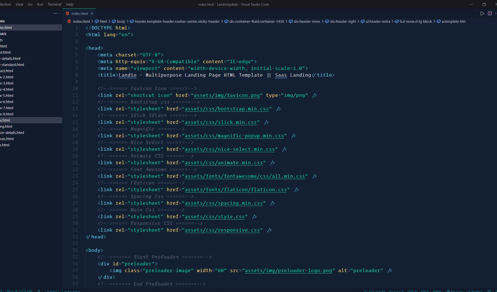
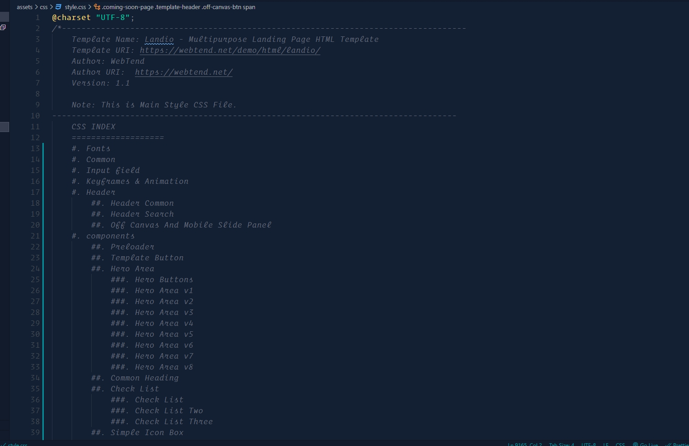
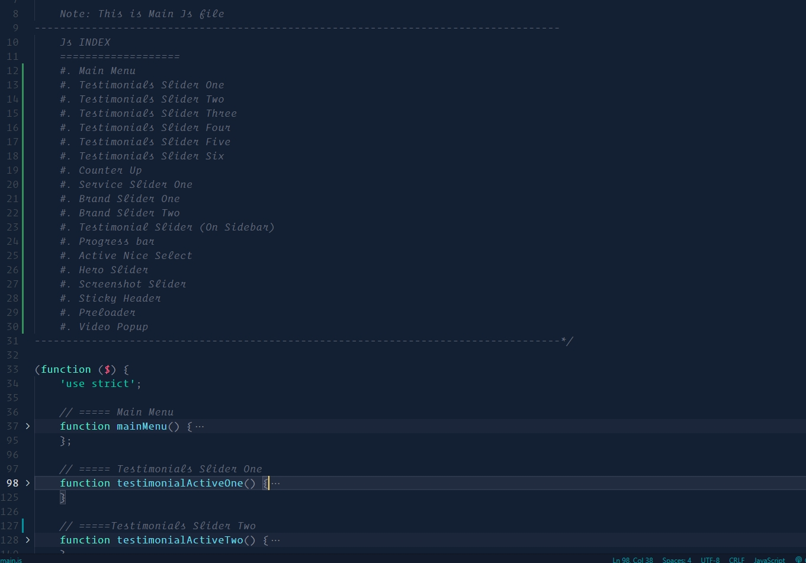
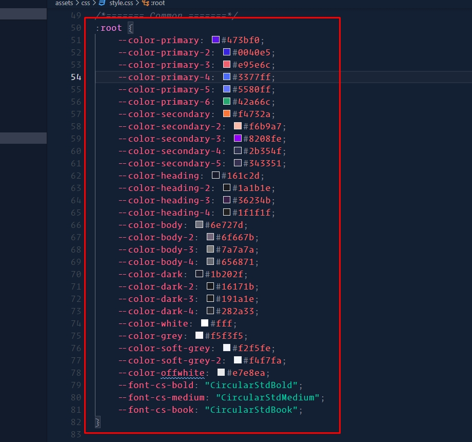
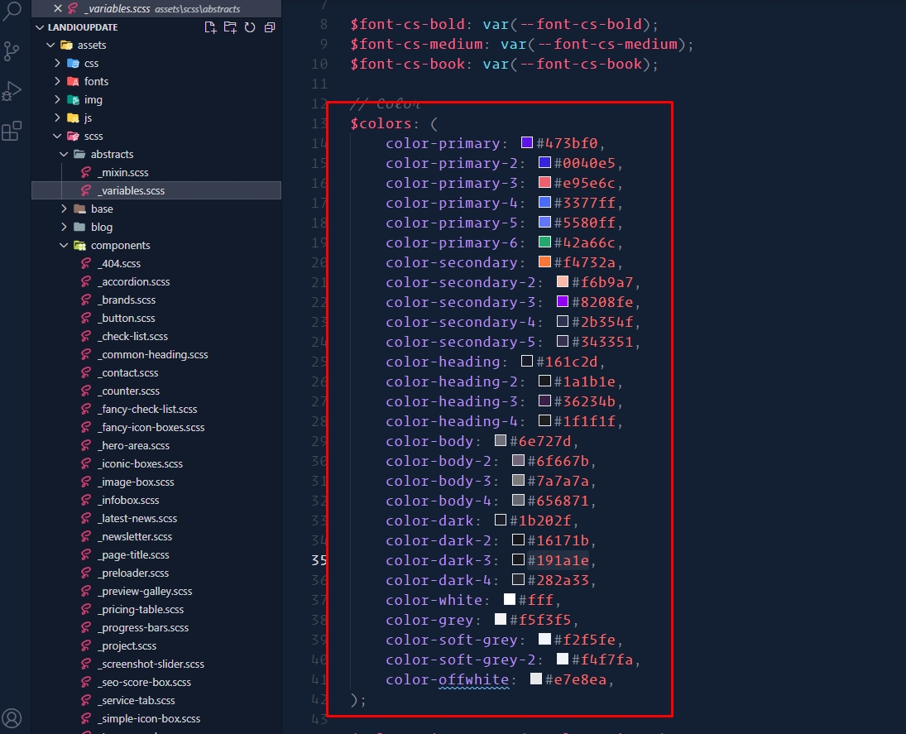
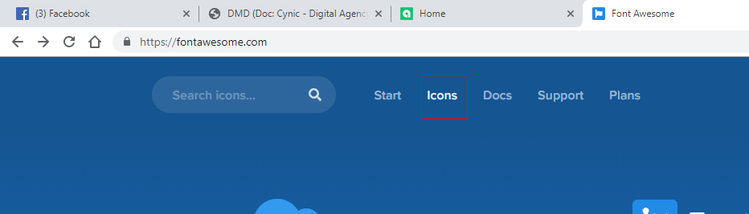
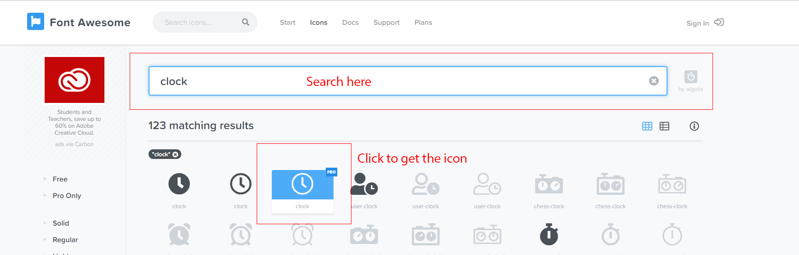
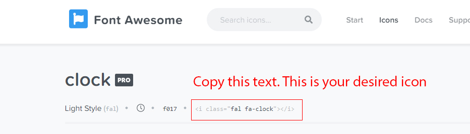

1. Introduction
We would like to thank you for choosing Landio.
We made Landio from the ground-up with flexibility in mind. Each element of
Landio
is extremely customizable, where you can make
Landio to reflect your own
branding styles.
The guide gives you detailed methodologies about how you can customize Landio and make it fit your brand perfectly!
1.2. What's Included
After purchasing Landio template on templateforest.net with your Envato account, go to your Download page. You can choose to download Landio template only or the entire Landio template package which contains the following files:
- Landio Html: A .zip file with all .html files with all necessary assets.
- Documentation: An HTML format documentation.
- Licensing.
2. Template Structures
2.1. HTML Structure
This template is a fixed layout with four columns. The main contents are inside the 'body' tag divided into differt section (i.e. header, banner, services,... footer etc.). The general template structure is the same throughout the template. Here is the general structure.
2.2. CSS Files and Structure
We are using one customed CSS files (style.css) and several vendor css files. CSS file structure is as follows:
2.3. JavaScript Files
There is a custom .js file named main.js and are several vendor js files as plugins. We are using jQuery(a javascript library) instead of vanilla javascript. Our file structure is a follows:
3. Change Contents
3.1. Changing Images
To change any images of the website
- Carefully collect the source name of the image (i.e. banner-img.jpg)
- Open the file called images.
- Find the particular image file.
- Replace the file with your image.
- Make sure that the file name does not change.The file name should be the same.
Example: Suppose you want to change the following image file:

You have to do the following to change this image with your own image:
- Open the file called images.
- Find the particular image file called banner-img.jpg
- Replace the file with your image
- Make sure that the file name does not change.
Note: Images seen in the live
preview are only set for preview purposes.
They are not included in the download
files.
3.2. Changing Brand Logo
- Open the folder called images.
- Find the .png files called logo.png and logo-2.png.
- Replace the files with your own logos.
- Make sure that the file names does not change.
3.3. Changing Colors
You can change color and font via CSS variables value And
3.3.1 Changing Template colors With css
- Open the main.css file from assets > css folder with a text-editor.
- Change the right-side values of the variables to change any default colors of your site.
- Save your file.
Have a look at the following image for a visual description:
3.3.1 Changing Template colors With SCSS
Before using this method you have to install scss compiler on you computer.
Read More About SCSS From Here.
Then
- Open the _variables.scss file from assets > scss > abstracts folder with a text-editor.
- Change the right-side values of the variables to change any default colors of your site.
- Save your file.
- Now Compile your scss file.
Have a look at the following image for a visual description:
3.4. Change FontAwesome icons
- Open the .html file with a text-editor from where you want to change any FontAwesome icon
- Choose and collect an icon from fontawesome.com
- Replace the existing icon from the .html file with the new icon you got from fontawesome.com
To get the icon from fontawesome.com-
- Go to fontawesome.com
- Click the icon tab 
- Search for your desired icon font and click on the thumbnail to get the icon 
- Copy the red bordered text as shown in the following image 
- Collect this text to and replace the existing icon from the .html file.
4. Sources and Credits
We've used the following fonts, free icons and plugins as listed:
5. Support
Support Scope
Included in Free Support Scope:
- Fixing bugs
- Helping clients in changing site contents by sending instructions that couldn’t be covered by documentation
NOT Included in Free Support Scope: